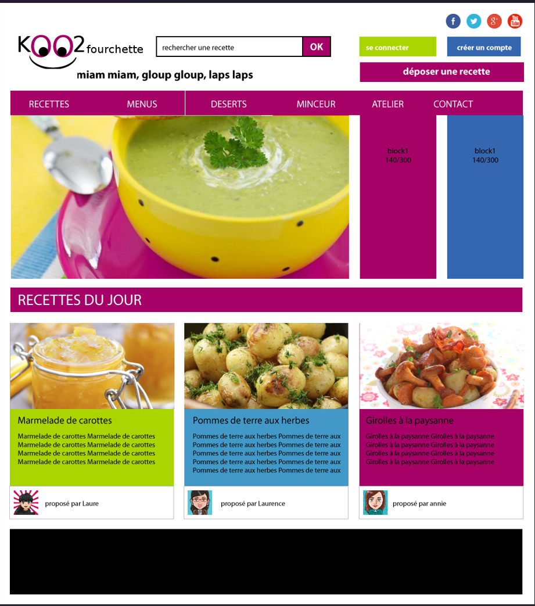

Projets durant le BTS
KOO2FOURCHETTE

KOO2FOURCHETTE est un projet réalisé en première année de BTS SIO où j'avais pour mission de créer un site internet fonctionnel pour l'entreprise KOO2FOURCHETTE. Pour cela nous avions comme contrainte d'utiliser les languages de programmation html css et php ainsi qu'a rendre le site visible via une machine virtuel sur Virtualbox. Nous avions un semstre pour réaliser ce projet de manière individuel afin d'apprendre à travailler en mode projet.